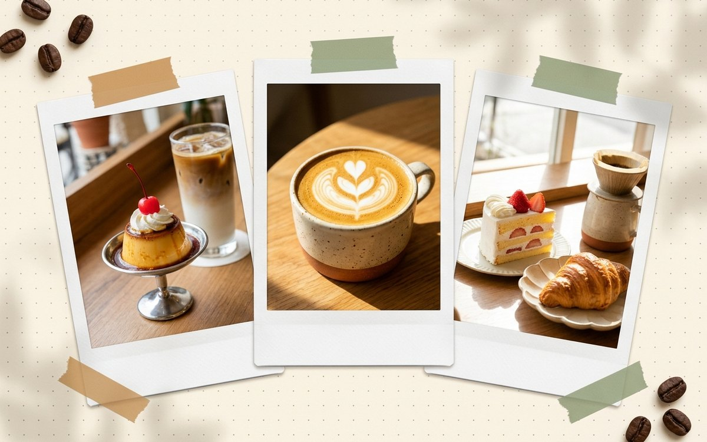
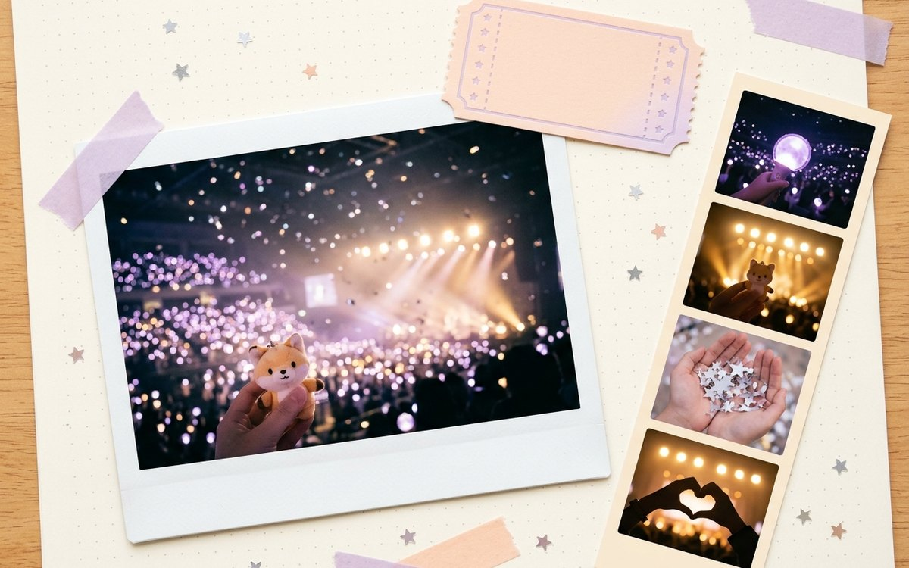
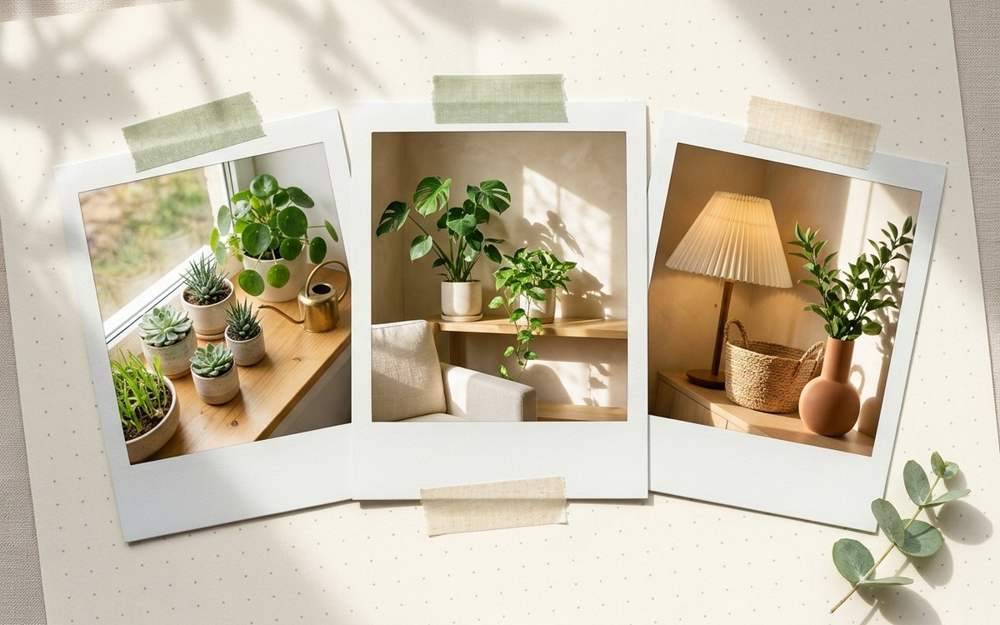
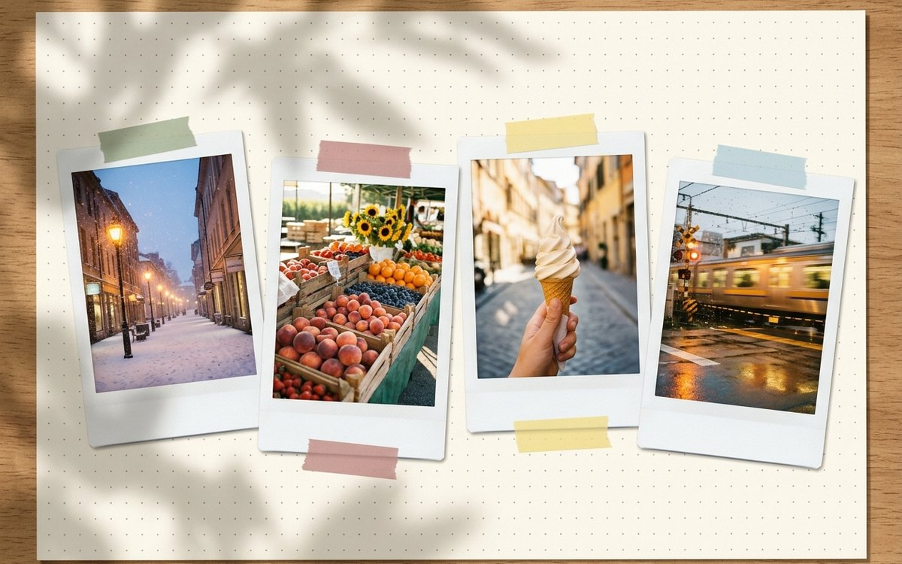

🌱 免費就能用
IDEA 09
☕ 美食＆咖啡廳踩點圖鑑
「上次那家超好吃的拉麵／布丁店叫什麼名字、哪天去的？翻相簿翻到手痠…」
吃之前拍一下，自動蓋上咖啡／美食心情章與日期，整齊排進你的美食手帳牆。下次朋友問推薦名單，一滑整面美食圖鑑直接秀給他看！
🖼️ 手帳牆🏷️ 心情與日期戳印🔍 日期月份速查
跑咖踩點、演唱會帶娃合拍、陽台小植栽或一整年的異國生活——不用修圖排版，拍完就變成賞心悅目的專屬圖鑑。


🌱 免費就能用「上次那家超好吃的拉麵／布丁店叫什麼名字、哪天去的？翻相簿翻到手痠…」
吃之前拍一下，自動蓋上咖啡／美食心情章與日期，整齊排進你的美食手帳牆。下次朋友問推薦名單，一滑整面美食圖鑑直接秀給他看！

🌱 免費就能用「想把小卡、娃、手燈跟現場氣氛拍進同一張照片，但修圖去背好麻煩…」
用 1 秒本機去背合拍，直接在手機上把喜歡的娃娃或小物合成進同一張相紙（完全不上傳伺服器），再搭四格拍貼，散場立刻收藏專屬紀念卡！

🌱 免費就能用「房間佈置跟植物發芽都是每天一點點變化，沒記日期根本忘記原本長怎樣。」
從空房間搬進第一張書桌，或是陽台多肉抽新芽、開花，每張卡片都自帶日期樣式。幾個月後往回滑手帳牆，滿滿的前後對比超療癒。

🌱 免費月曆 ＋ ★ VIP 地圖「在國外上課打工超充實，每天忙完根本沒時間寫網誌，好怕回國就忘光…」
每天順手拍一張超市戰利品、下雪街景或校園夕陽就好。一年結束搭飛機回國時，整年的月曆海報、精華小電影跟走過的城市足跡地圖已經全部幫你整理好了。
Cafe hopping, concert nights, home makeovers, and a year living abroad—snap once and watch your personal visual catalog build itself.
“What was that amazing ramen spot we went to last fall? I can’t find it in my camera roll…”
Snap before your first bite and add a coffee or sunny mood stamp. Every spot lines up neatly on your journal wall so your best recommendations are one scroll away.
“I want my plushie, lightstick, or keepsake right inside the venue photo—without wrestling a cutout app.”
Use 1-second on-device cutout Co-Snap (100% private on your iPhone) to place your favorite plushie or charm right onto the card, plus 4-cut strips after the encore.
“Room upgrades and new leaves happen so gradually I forget how it looked on day one.”
From empty floorboards to cozy bookshelves—or a tiny sprout turning into a jungle—every card carries its date automatically for ultra-satisfying before-and-after scrolling.
“Life abroad moves so fast—I have zero time to blog, and I’m scared I’ll forget the little days.”
Snap one everyday grocery find, snowy commute, or campus sunset. When you fly home, your full-year calendar posters, highlight movies, and city map are already waiting.
カフェ巡り、ライブ＆推し活合写、お部屋づくりや観葉植物、留学・ワーホリの 1 年まで。撮るだけで図鑑のように整います。
「前に行ったあの美味しいカフェ、いつ行ったんだっけ…アルバムから探せない！」
食べる前にパッと撮ってカフェスタンプを押すだけ。手帳ウォールにきれいに並ぶので、お気に入りのお店リストが自然に完成します。
「ぬい・アクスタ・ペンライトと現場の景色を 1 枚にまとめたいけど、切り抜き加工が大変…」
端末内で完結する 1 秒切り抜き合写を使えば、推しアイテムやペットをその場で同じカードに合成（外部送信なし）。ライブ帰りの 4 カット撮影にもぴったり！
「模様替えや植物の新芽は少しずつ変化するから、日付がないと前との違いを忘れちゃう。」
引っ越し初日からお気に入りの家具が増えていく様子や、ベランダの植物が芽吹く瞬間を日付カードで保存。数ヶ月後に見返すと感動します。
「海外生活は毎日バタバタで日記を書く余裕がない。でもこの 1 年を絶対忘れたくない！」
スーパーで買ったおやつや通学路の夕焼けを毎日 1 枚撮るだけ。帰国するころには、1 年分のカレンダーポスター・週末ムービー・足あとマップが自動で揃っています。
카페 투어, 콘서트 덕질 합사진, 집꾸미기와 식집사 기록, 교환학생·워홀 1년까지. 보정 없이 찍기만 해도 근사한 컬렉션이 됩니다.
“지난번에 갔던 그 디저트 맛집 언제 갔더라? 앨범을 한참 내려도 못 찾겠어요…”
먹기 전 찰칵 찍고 커피 스탬프만 톡 찍어두세요. 다이어리 벽에 깔끔하게 정렬되어 친구에게 맛집 추천할 때도 한 번에 꺼내 보여줄 수 있어요.
“인형이나 포카, 응원봉이랑 공연장 풍경을 한 장에 예쁘게 담고 싶은데 누끼 따기가 귀찮아요.”
기기 안에서 바로 끝나는 1초 누끼 합사진(서버 전송 없음)으로 최애 아이템을 한 장의 카드에 쏙! 공연 끝나고 찍는 감성 네컷까지 한 권에 모아보세요.
“방 꾸미기나 식물 새순은 매일 조금씩 바뀌어서 날짜를 안 적으면 변화를 잊어버려요.”
텅 빈 원룸이 내 취향으로 채워지는 과정, 베란다 화분에 꽃이 피는 날까지 날짜가 자동 기록돼요. 몇 달 뒤 거슬러 올라가 보면 뿌듯함이 두 배!
“해외 생활이 너무 바빠 블로그 쓸 시간은 없는데, 이 소중한 1년을 꼭 남기고 싶어요.”
마트 장바구니, 눈 오는 거리, 캠퍼스 노을을 하루 한 장씩만 찍어두세요. 귀국할 즈음엔 1년 달력 포스터와 주간 영상, 발자국 지도가 이미 완성되어 있어요.